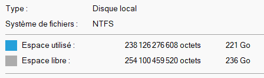
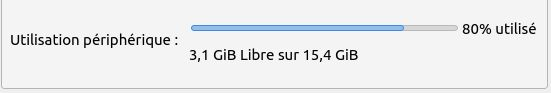

En représentation binaire, TOUTE l’information est représentée à l’aide de deux symboles uniquement, en général 0 et 1.
Chaque chiffre d’une représentation binaire est appelé un bit. Ce mot provenant de l’anglais signifie chiffre binaire, binary digit, abrégé en "bit". En anglais " a bit" signifie "un morceau" ou "un peu", ce qui convient très bien au chiffre binaire qui est donc l’unité la plus simple du monde numérique.
Le bit est donc l’unité de mesure de base de l’information en informatique. Il constitue la quantité minimale d’information transmise dans un message.
Mais les bits sont rarement seuls. On les regroupe usuellement par groupes de 8 bits, appelés octets en français et bytes en anglais. Les anglicistes chevronnés ne confondrons pas bit et byte dont la prononciation est différente !
Les symboles associés à ces unités sont les suivants :
| Unité | Symbole |
|---|---|
| bit | b |
| octet | o |
| byte | B |
Les quantités d’information s’expriment souvent en milliers, en millions, en milliards de bits ou d’octets, on utilise donc des multiples de ces unités de base.
Les préfixes officiellement reconnus par l’industrie sont similaires aux kilo-, méga-, … du système SI. Ces préfixes ne se réfèrent pas à des puissances de 10 comme dans le système SI mais à des puissances de 2:
| Nom | Abréviation | Quantité |
|---|---|---|
| kibioctet | kio | \(2^{10}=1024\approx 10^3\) |
| mébioctet | Mio | \(2^{20}=1\ 048\ 576\approx 10^6\) |
| gibioctet | Gio | \(2^{30}=1\ 073\ 741\ 824\approx 10^9\) |
| tébioctet | Tio | \(2^{40}=1 099\ 511\ 627\ 776\approx 10^{12}\) |
En anglais on remplacera le "o" par un "B".
La définition de ces préfixes est relativement récente : elle a été normalisée par la commission électrotechnique internationale en 1998. En pratique, on est souvent confronté à l’utilisation des préfixes traditionnels kilo-, méga-, tera-, etc du système SI, qui sont, pour rappel:
| Nom | Abréviation | Quantité |
|---|---|---|
| kilooctet | ko | \(10^3\) octets |
| mégaoctet | Mo | \(10^6\) octets |
| gigaoctet | Go | \(10^9\) octets |
| téraoctet | To | \(10^{12}\) octets |
De la même façon, dans un contexte anglophone, on lire "GB" plutôt que "Go".
Sur la capture d’écran ci-dessous, réalisée sous Windows 11, nous constatons que la valeur est affichée en Go, donc a priori en système décimal. Mais en réalité, la valeur affichée en octets correspond à 221 Gio. Le système ne respecte donc pas les conventions internationales.

Ici, nous voyons qu’un système Linux utilise la bonne abréviation :

Voici enfin une traduction concrète de l’ordre de grandeur de ces différentes unités :
| Unité | Équivalent approximatif |
|---|---|
| octet | un caractère de base de l’alphabet latin |
| kilooctet | une icône type “favicon” |
| mégaoctet | le texte de Harry Potter et la coupe de feu |
| gigaoctet | environ 30 minutes de vidéo |
| téraoctet | le plus gros disque dur en vente en 2007 |
| pétaoctet | 2000 ans de musique encodée en MP3 |
| exaoctet | trafic internet mondial par mois en 2004 |
| zettaoctet | trafic internet mondial de l’année 2016 |
Sources :